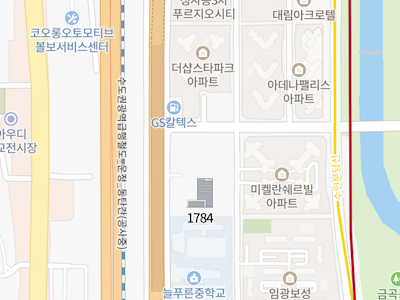
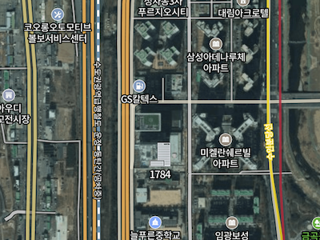
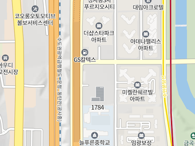

지도 유형
지도 유형(MapTypes)은 지도의 정보를 말하는 것으로 지도 타일을 어떻게 표시할지, 좌표계를 어떻게 변환할지를 정의하고 있습니다. NAVER 지도 API v3은 네 가지 지도 유형을 기본적으로 제공합니다.
기본 지도 유형
일반
일반 이미지 지도 유형입니다. MapTypeId 객체의 NORMAL 상숫값을 사용합니다.

위성
위성 이미지 지도 유형입니다. MapTypeId 객체의 SATELLITE 상숫값을 사용합니다.
겹침
위성 이미지 지도 위에 주요 도로와 지명을 함께 보여주는 겹침 지도 유형입니다. MapTypeId 객체의 HYBRID 상숫값을 사용합니다.

지형도
지형의 높낮이를 함께 보여주는 지도 유형입니다. MapTypeId 객체의 TERRAIN 상숫값을 사용합니다.

지도 유형 설정하기
지도를 초기화할 때 지도 유형을 설정하려면 다음과 같이 MapOptions 객체의 mapTypeId 속성을 설정합니다.
var map = new naver.maps.Map('map', {
mapTypeId: naver.maps.MapTypeId.HYBRID
});
지도 유형을 동적으로 설정하려면 다음과 같이 Map 객체의 setMapTypeId 메서드를 이용합니다.
map.setMapTypeId(naver.maps.MapTypeId.NORMAL);
Examples: 지도 유형 설정하기
사용자 지도 유형
NAVER 지도 API v3은 지도 유형을 만들 때 구현해야 할 메서드와 속성을 정의한 MapType 추상 인터페이스를 제공합니다.
이 인터페이스를 구현한 MapType 객체는 좌표계를 어떻게 변환할 것인지를 결정하기 위해 지도 좌표와 세계 좌표 간의 변환 방식을 정의하는 Projection 객체를 포함하며, 투영 객체를 이용해 표시할 타일의 인덱스를 계산하고 해당 인덱스의 타일을 반환하는 역할을 합니다.
지도 좌표란 실세계의 고유한 지점을 가리키는 좌표로 일반적인 위/경도 좌표입니다. 세계 좌표란 API에서 지도 위의 고유한 한 점을 가리키는 좌표로 내부적으로 사용하는 좌표입니다. 좌표 체계에 관한 자세한 내용은 지도 투영과 좌표 체계를 참고합니다.
즉, 새로운 타일이 필요할 때마다 NAVER 지도 API v3은 MapType 객체의 인터페이스를 호출해 현재 좌표와 줌 레벨에 맞는 새로운 타일을 가져와 표시합니다.
MapType 인터페이스를 구현하는 방법은 사용자 지도 유형 만들기를 참고합니다.
지도 유형 저장소 사용하기
앞서 일반, 위성 등의 다양한 지도 유형을 설명했습니다. NAVER 지도 API v3은 이와 같은 지도 유형을 관리하기 위해 지도 유형 저장소라고 불리는 MapTypeRegistry 객체를 이용합니다.
지도 유형 저장소는 MapType 객체를 컬렉션으로 관리하고 있으며, NAVER 지도 API v3에서 기본적으로 제공하는 지도 유형은 NaverStyleMapTypeOptions 객체에서 제공하는 팩토리 메서드를 이용해 접근할 수 있습니다.
naver.maps.NaverStyleMapTypeOptions.getNormalMap();
다음은 원하는 지도 유형(위성, 겹침보기)만 등록하는 예제입니다. 등록되지 않은 지도 유형을 사용하려고 하면 오류가 발생합니다.
var registry = new naver.maps.MapTypeRegistry();
var map = new naver.maps.Map('map', {
mapTypes: registry,
mapTypeId: naver.maps.MapTypeId.SATELLITE
});
map.mapTypes.set(naver.maps.MapTypeId.SATELLITE, naver.maps.NaverStyleMapTypeOptions.getSatelliteMap());
map.mapTypes.set(naver.maps.MapTypeId.HYBRID, naver.maps.NaverStyleMapTypeOptions.getHybridMap());
map.setMapTypeId(naver.maps.MapTypeId.NORMAL); // error thrown
사용자 지도 유형 만들기
사용자 지도 유형을 만들려면 앞서 설명한 MapType 인터페이스를 구현하고, 지도 유형 저장소에 추가해야 합니다. MapType 인터페이스를 구현하려면 다음 메서드와 속성을 정의해야 합니다.
getTile(필수): 중심 세계 좌표와 투영법에 따라 표시할 x축과 y축 인덱스, 줌 레벨 z를 전달받아 화면에 표시할 타일 요소를 반환합니다.minZoom: 지도 유형이 타일을 표시할 수 있는 최소 줌 레벨을 지정합니다.maxZoom: 지도 유형이 타일을 표시할 수 있는 최대 줌 레벨을 지정합니다.tileSize: 타일의 크기를 지정합니다. 기본값은256 x 256입니다.projection: 지도 유형이 사용할 투영법입니다. 지정하지 않으면 지도 좌표와 세계 좌표가 일치하는 기본 투영법을 사용합니다.name: 지도 유형의 이름입니다. 지도 유형의 이름은 지도 유형 컨트롤 등에서 사용합니다.
다음은 MapType 인터페이스를 구현한 사용자 지도 유형의 예제입니다.
var MyMapType = {
name: "Alphabet",
minZoom: 0,
maxZoom: 22,
projection: naver.maps.EPSG3857,
tileSize: new naver.maps.Size(50, 50),
getTile: function(x, y, z) {
var w = this.tileSize.width,
h = this.tileSize.height;
var ascii = parseInt(Math.abs(x + y) % 26, 10) + 65;
alphabet = String.fromCharCode(ascii);
var tile = document.createElement('div');
tile.style.width = w +'px';
tile.style.height = w +'px';
return tile;
}
};
var map = new naver.maps.Map('map', {
center: new naver.maps.LatLng(37.3595704, 127.105399),
zoom: 10,
mapTypeId: 'mine',
mapTypes: new naver.maps.MapTypeRegistry({
'mine': MyMapType
}),
mapTypeControl: true,
mapTypeControlOptions: {
style: naver.maps.MapTypeControlStyle.DROPDOWN
}
});
Examples: 사용자 지도 유형 만들기
이미지 지도 유형 만들기
NAVER 지도 API v3은 이미지 타일 방식의 지도 유형을 빠르고, 쉽게 만들 수 있는 ImageMapType 클래스를 제공합니다. 이 클래스를 활용하면 NAVER 지도 API v3에서 제공하는 기본 지도 유형과 유사한 이미지 지도 유형을 만들 수 있습니다.
ImageMapType 클래스를 이용해 이미지 지도 유형을 만들 때는 ImageMapTypeOptions 객체를 전달해야 합니다. 이 객체는 다음과 같은 메서드와 속성을 정의하고 있습니다.
getTile(필수): 중심 세계 좌표와 투영법에 따라 표시할 x축과 y축 인덱스, 줌 레벨 z를 전달받아 화면에 표시할 이미지 타일의 URL 또는 URL의 배열을 반환합니다.minZoom: 지도 유형이 타일을 표시할 수 있는 최소 줌 레벨을 지정합니다.maxZoom: 지도 유형이 타일을 표시할 수 있는 최대 줌 레벨을 지정합니다.tileSize: 타일의 크기를 지정합니다. 기본값은256 x 256입니다.projection: 지도 유형이 사용할 투영법입니다. 지정하지 않으면 지도 좌표와 세계 좌표가 일치하는 기본 투영법을 사용합니다.name: 지도 유형의 이름입니다. 지도 유형의 이름은 지도 유형 컨트롤 등에서 사용합니다.repeatX: 현재 화면에서 지도 유형이 줌 레벨에 따라 표현할 수 있는 타일의 범위를 넘어섰을 때 타일의 반복 여부입니다. 이 옵션은 다음과 같이 세계 지도의 최소 레벨에서 지형을 연속적으로 표현하고자 할 때 주로 사용합니다.

이미지 지도 유형의 옵션을 동적으로 변경하기
앞의 예제와 같이 ImageMapTypeOptions 객체를 지정해 ImageMapType 인스턴스를 생성하면 getMapTypeOptions 메서드를 이용해 지정한 ImageMapTypeOptions 객체를 가져올 수 있습니다.
이 객체를 동적으로 수정한 다음, setMapTypeOptions 메서드를 이용해 설정하면 지도 유형을 변경할 수 있습니다. 이때 지도를 새로 고쳐야 변경된 지도 유형이 반영됩니다.
다음은 지도의 타일 크기를 동적으로 변경하는 예제입니다.
map.setMapTypeId(naver.maps.MapTypeId.NORMAL);
var normalType = map.getMapType();
var normalTypeOption = normalType.getMapTypeOptions();
normalTypeOption.tileSize = new naver.maps.Size(512, 512);
normalType.setMapTypeOptions(normalTypeOption);
map.refresh();
Examples: 투영법과 타일의 크기를 동적으로 변경하기
캔버스 지도 유형 만들기
NAVER 지도 API v3은 캔버스 타일 방식의 지도 유형을 빠르고, 쉽게 만들 수 있는 CanvasMapType 클래스를 제공합니다.
CanvasMapType 클래스를 이용해 캔버스 지도 유형을 만들 때는 CanvasMapTypeOptions 객체를 전달해야 합니다. 이 객체는 다음과 같은 메서드와 속성을 정의하고 있습니다.
getTile(필수): 중심 세계 좌표와 투영법에 따라 표시할 x축과 y축 인덱스, 줌 레벨 z를 전달받아 화면에 표시할 CanvasTile 객체를 반환합니다.minZoom: 지도 유형이 타일을 표시할 수 있는 최소 줌 레벨을 지정합니다.maxZoom: 지도 유형이 타일을 표시할 수 있는 최대 줌 레벨을 지정합니다.tileSize: 타일의 크기를 지정합니다. 기본값은256 x 256입니다.projection: 지도 유형이 사용할 투영법입니다. 지정하지 않으면 지도 좌표와 세계 좌표가 일치하는 기본 투영법을 사용합니다.name: 지도 유형의 이름입니다. 지도 유형의 이름은 지도 유형 컨트롤 등에서 사용합니다.repeatX: 현재 화면에서 지도 유형이 줌 레벨에 따라 표현할 수 있는 타일의 범위를 넘어섰을 때 타일의 반복 여부입니다. 이 옵션은 다음과 같이 세계 지도의 최소 레벨에서 지형을 연속적으로 표현하고자 할 때 주로 사용합니다.
다음은 CanvasMapType 클래스를 이용해 알파벳 사용자 지도 유형을 만든 예제입니다.
var MyMapType = {
name: "Alphabet",
minZoom: 0,
maxZoom: 22,
tileSize: new naver.maps.Size(50, 50),
getTileData: function(x, y, z) {
var w = this.tileSize.width,
h = this.tileSize.height,
canvas = document.createElement("canvas"),
ctx = canvas.getContext("2d");
var ascii = parseInt(Math.abs(x + y) % 26, 10) + 65;
alphabet = String.fromCharCode(ascii);
canvas.width = w;
canvas.height = h;
ctx.globalAlpha = 1 - ((ascii - 65) * 0.04);
ctx.rect(0, 0, w, h);
ctx.fillStyle = "#000";
ctx.fill();
ctx.lineWidth = 1;
ctx.strokeStyle = "#aaa";
ctx.stroke();
ctx.font = "bold " + (Math.min(w, h) - 10) + "px Arial";
ctx.textBaseline = "middle";
ctx.textAlign = "center";
ctx.fillStyle = "#fff";
ctx.fillText(alphabet, w / 2, h / 2);
return ctx.getImageData(0, 0, w, h);
}
};
var map = new naver.maps.Map('map', {
center: new naver.maps.LatLng(28.084179775000003, 25.216796875),
zoom: 10,
mapTypeId: 'Alphabet',
mapTypes: new naver.maps.PaneTypeRegistry({
"Alphabet": new naver.maps.CanvasMapType(MyMapType)
})
});
Examples: 캔버스 타일 지도 유형
기타 사용자 지도 유형 예제
위에서 설명한 사용자 지도 유형 외에도 다음과 같이 다양한 사용자 지도 유형 예제를 참고할 수 있습니다.
Examples: 지도의 타일 인덱스 그리드 지도 유형
Examples: 이미지 타일 지도 유형
Examples: 두 가지의 지도 유형을 함께 사용하기
Examples: Starcraft The Hunters 지도 유형
Examples: NAVER 그린팩토리 지도 유형